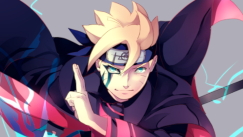

Boruto
Boruto Uzumaki (うずまきボルト, Uzumaki Boruto) es el protagonista del manga y anime Boruto: Naruto Next Generations. Es un habitante de Konohagakure miembro del Clan Uzumaki y descendiente directo del Clan Hyūga por parte materna, hijo del Séptimo Hokage, Naruto Uzumaki y Hinata Hyūga, así como el hermano mayor de Himawari Uzumaki.